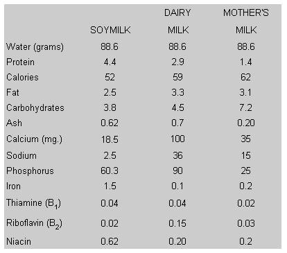
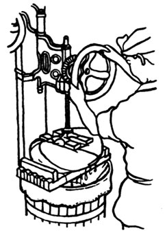
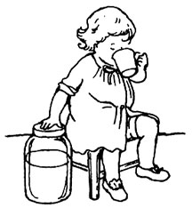

In MOTHER NOS. 41 and 42, Bill Shurtleff and Akiko Aoyagi explained the art of making and serving tofu. Below, the authors reveal how to prepare yet another low-cost, super-nutritious food: soymilk!
Soymilk has been used for centuries throughout East Asia in much the same way that dairy milk is now used in the West. Today many people who could not possibly afford cow's milk find that soymilk's greatest appeal lies in its remarkably low cost. Whether prepared at home or in tofu shops, specialty shops, or factories, it can be produced for about one-half to one-third the cost of cow's milk.
Nutritionally, soymilk compares very favorably with dairy milk, as will be seen by comparing the following figures showing the composition of a 100?gram portion of soy, dairy, and mother's milk:
Thus, in many parts of the world where dairy milk is not generally consumed and does not give promise of ever being able to meet the needs of growing populations, soymilk could serve as a practical source of high-quality, essential nutrients, both for infants and growing children in their crucial formative years, and for adults of all ages. Moreover, it is already finding popular appeal in the affluent West, especially among the many people interested in natural, health, and diet foods, and in a growing number of communities that find they can produce their own soymilk fresh each morning for a fraction of the price they would have to pay for dairy milk. "The Farm", a community of seven hundred, for example, has recently started its own soy dairy capable of producing 80 gallons of rich soymilk every day at a cost of only 7-1/2 cents per quart. "Farm" spokesmen report that the community's "babies love soymilk" and that most of its 250 children have been weaned onto it directly. And many tofu shops in America now sell bottled soymilk (available plain, or sweetened with honey or honey-carob) to a growing number of patrons.
Soymilk is well thought of by medical practitioners as well as laymen. Many Japanese doctors view it as an effective natural medicine and prescribe it ass a regular part of the diet for diabetes (because it is low in starch); heart disease, high blood pressure, and hardening of the arteries (because it is free of cholesterol, low in saturated fats, and rich in lecithin and linoleic acid); and anemia (because it is rich in iron and is thought to stimulate the production of hemoglobin). It is also used to strengthen the digestive system (since health-giving lactic acid bacteria thrive and multiply in its presence) and alkalize?hence fortify?the bloodstream (since it is among the most alkaline sources of protein).
Tofu makers have frequently told us that a number of their customers order soymilk daily for use as a medicine as well as a tasty beverage. Many Japanese claim that soymilk helps bring out the natural luster of the skin, and, in fact, people who work in tofu and yuba shops are well known for their fine complexions. Many a tofu maker has told us how, when his nursing wife's milk supply decreased or failed, she fed the baby soymilk, often using it as a basic food until weaning time. And even today, many pregnant and nursing women drink soymilk to increase the quality and flow of their milk. Soymilk is also thought to be effective 'in curing constipation and intestinal disturbances in children.
The point can well be made that soymilk is a better and more convenient way of using soybeans as a food than tofu. It is considerably easier to make, takes less than one-half the time, requires less fuel and equipment, and therefore costs less; it contains 83 percent of the protein originally present in the soybeans (tofu contains only 73-1/2 percent due to losses in the whey and soaking water); it is a simpler food since no solidifier need be added in its manufacture; it contains the full, subtle sweetness of the soybeans, which gradually diminishes in proportion to the length of time the resultant kinugo shi or regular tofu is soaked in water; and it can be fed even to babies who are too young to eat tofu.
Used for centuries to make doufu-ru, a soft Chinese cheese-like product fermented in brining liquor, soymilk can also be used to make Western-style cheeses. Furthermore, it can be fermented with the same starters as dairy milk to make delicious and inexpensive homemade yogurt. In Westernstyle cookery, soymilk may be used in any recipe calling for dairy milk.
The recipe given below is the traditional one used in Japanese tofu shops. This rich, thick soymilk contains 5.5 percent protein (versus 3% for dairy milk). Using store-bought soybeans, it can be prepared at home for less than one-half the cost of dairy milk and should be ready to serve 20 minutes after you start. If you are not preparing homemade kinugoshi or yuba and desire a slightly larger yield of soymilk, heat 1 (instead of 1/2) cup water in the cooking pot initially. The utensils you will need are included among those required for preparing Homemade Tofu (see MOTHER NO. 41, pg. 40).
1 cup soybeans, washed and drained 3 times,
soaked in 2 quarts 70° F water for about 10
hours, then rinsed and drained twice
4 cups water, approximately
Prepare pressing pot and sack in advance as for Homemade Tofu.
[1] Heat 1/2 cup water over very low heat in covered cooking pot. While water is heating, combine beans and 2-2/3 cups water in a blender and puree at high speed for about 3 minutes, or until very smooth. (If using a grain mill, food mill, or meat grinder, grind beans without adding water and add 2-2/3 cups more water to cooking pot.)
[2] Add soybean puree to water heating (or boiling) in cooking pot, rinsing out blender with 1/4 cup water to retrieve any puree that may cling to blender's walls. Increase heat to medium-high and continue cooking, stirring bottom of pot constantly with a wooden spatula or spoon to prevent sticking. When foam suddenly rises in pot; quickly turn off heat and pour contents of pot into pressing sack. Using a rubber spatula, retrieve any soybean puree that may still cling to sides of cooking pot and transfer to pressing sack. Quickly fill cooking pot with water and set aside to soak.
[3] Twist hot sack closed. Using a glass jar or potato masher, press sack against colander, expressing as much soymilk as possible. Open sack, shake okara (soybean pulp) into one corner, close, and press again. Now open sack wide in colander and stir okara while blowing on it to hasten cooling, then allow okara to stand for 3 to S minutes while you wash cooking pot. Sprinkle 1/2 cup water over surface of okara. Close sack and press well as before, then squeeze sack by hand to express last of soymilk. Empty okara into any large container and set aside for use as a treat for pets or livestock, or as a nutrient-rich additive to soups or scrambled eggs.
[4] Pour soymilk into cooking pot and bring to a boil over medium-high heat, stirring bottom constantly to prevent sticking. Reduce heat to medium and cook for 5 to 7 minutes, then turn off heat.
Serve soymilk hot or cold as Rich Soymilk. To serve chilled, stir desired sweeteners and seasonings into hot soymilk, cover pot, and set into cold wafer for 10 minutes. Pour into a bottle, cover, and refrigerate. Chilled soymilk can be served just as is, like dairy milk, on your favorite dishes such as hot or cold applesauce, crunchy granola, or fresh strawberries.
VARIATIONS
For soymilk with a refreshing but subtle citrus fragrance and a slightly richer creaminess, add a very thin wedge of lemon, lime, or yuzu to soymilk at the beginning of step 4, and remove wedge just before serving.
For soymilk with a milder flavor (more like that of dairy milk), remove hulls from soaked beans by rubbing under water, then skimming off with a mesh skimmer.
Chinese-style soymilk (Doufu-chiang) is usually thinner than the Japanese variety and, in our opinion, considerably more difficult to prepare. Moreover, since unheated puree does not pass as easily through the pressing sack, this method gives a 10 percent lower yield of nutrients. If the okara is to be used in other recipes, be sure to cook it thoroughly since it is not cooked with the soymilk.
1 cup soybeans, washed and drained 3 times,
soaked in 2 quarts 70° f water for 10 hours,
then rinsed and drained twice
5-1/2 to 6 cups water
Combine beans with 3-1/2 cups (warm) water in a blender and puree at high speed for 3 minutes. Empty puree into a moistened cloth pressing sack lining a colander set over a large pot. Twist sack closed and squeeze sack gently but thoroughly to expel as much soymilk as possible. Remove okara and return to blender with 2 to 2-12 cups more (warm) water; puree for about 1 minute. Return okara to pressing sack and squeeze again.
Bring soymilk to a boil over high heat, stirring constantly. Reduce heat to low and simmer for 5 to 7 minutes. (If foam begins to rise, remove with a skimmer.) Serve hot or cold with sweetening, as for Rich Soymilk.
Although soymilk prepared from powder is somewhat more expensive than (and not quite as delicious as) that made from whole soybeans, the process is naturally much faster since it is unnecessary to grind the beans or press the milk from okara. The soymilk will be ready less than 10 minutes after you start. This recipe is good for use on camping trips or when the soymilk is blended with other ingredients. Powdered soymilk is now available at many natural food stores and Japanese markets.
1 cup powdered soymilk
3 cups water
Combine powder and water in a 3-to 4-quart saucepan and whisk well until dissolved. Bring to a boil over high heat, stirring constantly. Reduce heat to low and simmer for 3 minutes. Serve hot or cold.
Here is a recipe you can use if you are unable to obtain whole soybeans or powdered soymilk, or if you do not have a blender or grinder.
1 cup soy flour
3-1/2 cups water
Combine soy flour and 3 cups water in a small saucepan and bring to a boil over medium heat, stirring constantly. Proceed as for Homemade Soymilk, pressing soymilk through a cloth sack; rinse okara with 1/2 cup water and re-press. Now bring soymilk to a boil and simmer for 5 minutes before serving.
For variety, the soymilk may be cooked in a double boiler for about 50 minutes; omit the second cooking.
Since soymilk ferments faster than dairy milk, soymilk yogurt takes less time and less starter, and involves much less trouble than dairy yogurt. Soymilk yogurt requires no special incubating and heating equipment and can be prepared at room temperature. When prepared from homemade soymilk, the cost is about one-sixth that of commercial dairy yogurt, while the protein content is often twice as high. The bacteria in the starter? fresh plain yogurt?produce lactic acid which acts as a protein solidifier.
3-1/4 cups Homemade Soymilk
1 teaspoon yogurt
Allow freshly made soymilk to cool to slightly warmer than body temperature (105° to 110°). Remove thin yuba film from surface of soymilk and reserve. Stir yogurt into soymilk, then pour inoculated milk into a clean jar. Cover and allow to stand at room temperature (70° F or above) for 14 to 18 hours. When ready, set aside several tablespoons of the new yogurt to use as a starter for the next batch. Serve yogurt as is, sweetened with a little honey, or mixed with sliced bananas, raisins, toasted wheat germ, grated coconut, apple wedges, chopped nuts, sunflower seeds, or granola. Serve yuba sprinkled with a few drops of shoyu (Japanese soy sauce).
If cultured for too short a time, the tang and subtle sourness of fine yogurt will not develop; if cultured for too long, the yogurt will sour and separate into curds and whey.
Store-bought soymilk can be made into yogurt by simply mixing in starter at room temperature and proceeding as above. To decrease fermentation time, add 1 teaspoon honey before inoculation, or use a little more starter or an incubator set at 100° to 110°.
This is the most popular way of serving soymilk throughout East Asia. Generally soymilk is served steaming hot out of the tofu shop cauldron; but during the summer it is also served chilled. The latter has a richer, creamier consistency, a deeper natural sweetness, and a flavor more like that of dairy milk. In China and Taiwan, a well-known breakfast drink called tento chiang or tien-chiang (sweet soymilk) consists of soymilk sweetened with sugar or molasses. It is usually served with deep-fried bread sticks wrapped in a chapati.
Serve Homemade Soymilk plain, or stir into 1 cup, hot or cold:
1 to 2 teaspoons honey, natural sugar, molasses, mizuame, or barley sugar; and a dash of salt or several drops of shoyu. (The latter may also be used without the sweetening.)
1 egg yolk. This greatly improves the drink's nutritional value.
2-1/2 teaspoons carob powder, 1 tablespoon honey or sugar, and a dash of salt. If desired, add several teaspoons malt and a few drops of vanilla to make malted milk or malted carob cocoa.
2 teaspoons honey or sugar, 1/4 teaspoon grated ginger root (or 118 teaspoon powdered ginger), and 1/8 teaspoon each nutmeg and salt.
1 tablespoon honey or mizuame, 2 tablespoons ground roasted sesame seeds and, if desired, 1 tablespoon grated glutinous yam.
Cream 1/4 cup nut butter (cashew, almond, peanut), 1?112 teaspoons honey or natural sugar, and a dash of salt with a small amount of the warm milk, then stir in remainder of milk.
Soymilk is richer than dairy milk in almost every nutrient except calcium, a mineral which is essential for babies and growing children. The world's richest source of calcium is the sesame seed, which contains over six times as much calcium by weight as dairy milk. Since soy and sesame proteins are complementary, their combination yields an abundance of high quality protein.
1 cup (warm) soymilk
1-1/2 to 2 tablespoons tahini or sesame butter
1 to 1-1/2 teaspoons honey or natural sugar
Dash of salt
1 egg yolk (optional)
Combine all ingredients, mixing well.
|
 Soymilk being pressed from a sack of okara (soybean pulp) in a Japanese tofu shop. |
 Soymilk is reachin protein and iron, and is thus an excellent food for children |
 |